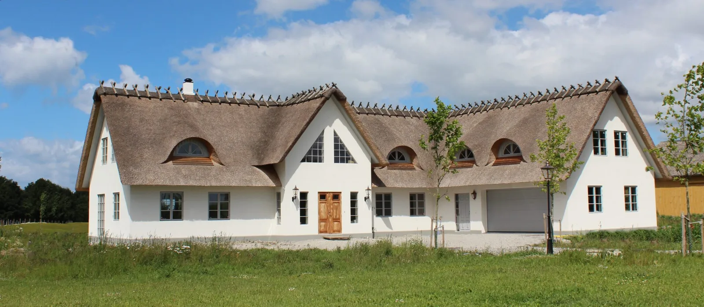

Se projekt
Se projekt 
Arkitektur som
känns hemma.
Villor, tillbyggnader och hästgårdar.
Ritade med omsorg om platsen och livet du vill leva.
Sofia Holm · Arkitekt SAR/MSAHalmtaksvilla i Kabbarp
Villor & tillbyggnaderGårdar & hästanläggningarMed utgångspunkt i Skåne
Vackert att se på.
Självklart att leva i.
Ett hem ska vara mer än en fin fasad. Det ska göra plats för ditt liv.
Jag är Sofia Holm, arkitekt med över tio års erfarenhet av att forma hem och gårdar. Med nära samarbete och känsla för platsen hjälper jag dig från första tanke till en genomarbetad helhet.
Lär känna SofiaPlatser att längta till.
Alla åtta projekt

Det börjar med en idé.
Och en omtänksam skiss.
Hur ska det kännas att komma hem? Var faller morgonljuset? Och hur får vi vardagen att flyta?
Jag hjälper dig att se möjligheterna – från de första tankarna till ritningar, bygglov och dialogen med dem som bygger.
Så arbetar jagGörslöv · BadrumPlanritning

 Sofia Holm
Sofia HolmArkitekt SAR/MSA
Din plats.
Dina idéer.
Mitt engagemang.
Det personliga samarbetet är kärnan i mitt arbete. Jag tar mig tid att förstå hur du lever, vad som saknas och vad du vill bevara.
Från villor och äldre hus till gårdar och hästanläggningar – jag följer den röda tråden, så att varje beslut hör ihop med helheten.
Mer om mig och mitt arbetssättSofia
 Hästanläggning · Gestaltningsförslag
Hästanläggning · GestaltningsförslagRitat för livet
med hästar.
En bra hästgård märks i vardagen. I vägen till hagen, ljuset i stallet och allt det praktiska som bara fungerar.
Med bakgrund inom hästsport och hästhållning förenar jag arkitektur med egen erfarenhet av livet på gården.
Se hästanläggningarnaFrån frågetecken
till bygglov.
Min digitala guide gör bygglovsprocessen mer överskådlig. 23 sidor med förklaringar, checklista och ett eget avsnitt om hästgårdar.
Upptäck bygglovsguiden · 249 kr